(+6221) 53664835-37
Events
USER GROUP APLIKASI CORE BANKING SYSTEM WINCore
Sosialisasi Aplikasi WINCore Dalam Mendukung Pelaporan Antasena
17 Oktober 2019
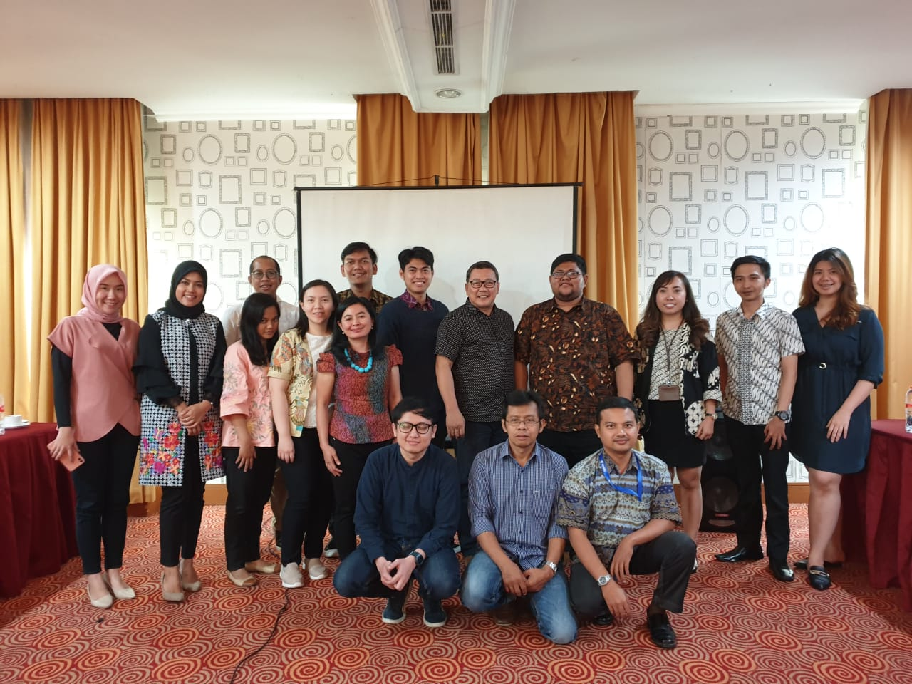
Diskusi & Sharing Penerapan PSAK 71 Di Bank Umum
21 Maret 2018
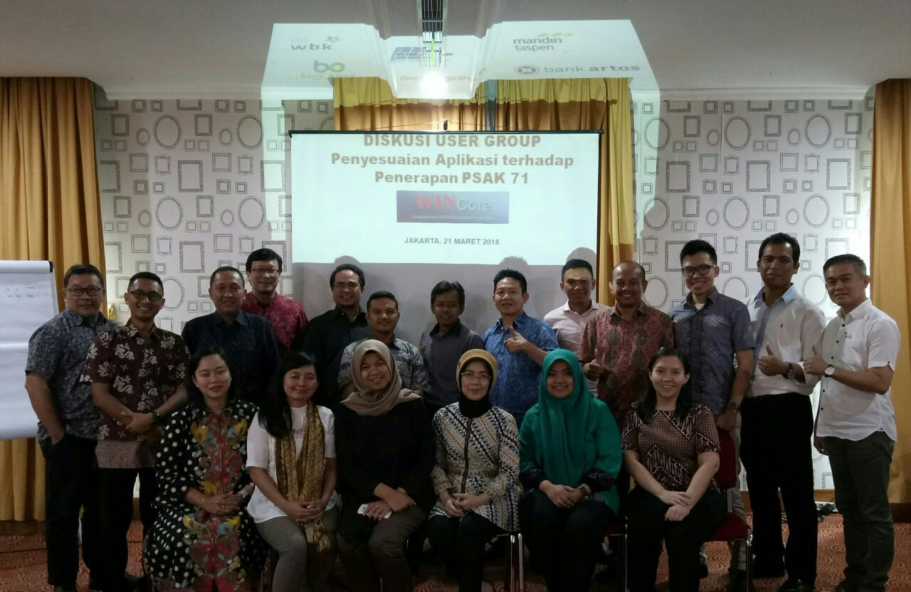
Sosialisasi Aplikasi WINCore untuk Mendukung Implementasi SLIK
18-19 Januari 2017
Kopdit CU Lantang Tipo siap Online
(Sumber: Web site Kopdit CU Lantang Tipo)
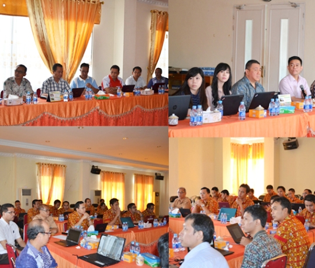
Kopdit CU Lantang Tipo memantapkan langkah untuk online. Hal ini disampaikan saat steering comitte terakhir yang dilakukan antara Pengurus, Pengawas, Pimpinan Eksekutif bersama dengan PT. WBK dan PT. ALTO jumat 5 Juni 2015 lalu. Dalam steering Comitte ini dibahas berkaitan dengan kegiatan yang sudah dilakukan sampai dengan rencana pelaksanaan launching senin 15 Juni 2015 mendatang. Laporan pekerjaan ini disampaikan untuk memastikan launching tersebut sehingga semua sesuai yang direncanakan. Berkaitan dengan launching tersebut dibentuk tim pendamping dan sosialisasi melalui media Televisi lokal PT.Ruai Televisi.
Tahap pertama penggunaan aplikasi Wincore ini digunakan di 7 Kantor Cabang yaitu Cabang Utama, Sanggau, Sekadau, Sintang, Nanga Pinoh, Masdapala Ngabang dan Jeruju Pontianak. Setiap perubahan membutuhkan penyesuaian begitu juga dengan penerapan aplikasi baru ini, tentu diharapkan pengertian dan dukungan darisemua anggota untuk dapat memahami proses tersebut.
Kedepan diharapkan dengan penggunaan aplikasi online inidapat semakin meningkatkan layanan kepada anggota sehingga pekerjaan administratif tidak lagi dikerjakan secara manual tetapi dikerjakan oleh sistem. Sehingga eksekutif dapat memiliki lebih banyak waktuuntuk lebih melayani anggota. (Dt)
USER GROUP APLIKASI CORE BANKING SYSTEM WINCore
21-22 August 2014
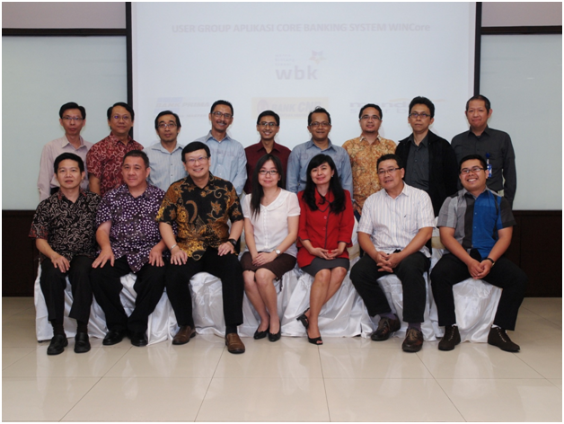
Pada tanggal 21 s/d 22 Agustus 2014, PT.Warna Bintang Kreasi melakukan pertemuan dengan Bank Umum pengguna Aplikasi WINCore (User Group) di Surabaya. Pada pertemuan tersebut, WBK mempresentasikan fitur-fitur baruhasil pengembangan WBK atas aplikasi WINCore serta mendengar dan menerima masukan dari peserta user group. Pertemuan ini dihadiri oleh perwakilan dari Bank Prima Master, Centrama Nasional Bank, Bank Sinar Harapan Bali, Anglomas Internasional Bank dan Bank Dinar Indonesia.
Acara 10 tahun WBK sekaligus peresmian kantor & logo baru WBK
Pada tanggal 12 Desember 2012 WBK mengadakan acara 10 tahun WBK sekaligus peresmian kantor baru WBK di Belleza Office Tower Lt 10 dan peresmian logo baru WBK. Pada acara tersebut hadir bank-bank pengguna WINCore beserta business partner WBK.
BPR BKK LASEM TERAPKAN TEKNOLOGI MUTAKHIR
Sumber: Hari Suara Merdeka - 20 Desember 2011
Sebuah terobosan baru PD. BPR BKK Lasem, Rembang untuk mengatasi hambatan dalam memberi pelayanan kepada nasabahnya diluncurkan. Mereka memanfaatkan teknologi mutakhir guna menjamin pelayanan professional serta jaringan terpadu. Kerja keras dan kerja sama tim dari PD. BPR BKK Lasem dengan PT. Warna Bintang Kreasi (WBK) selama lebih kurang lima bulan, sukses membuat implementasi aplikasi Core Banking System (WINCore). Kesuksesan menggunakan aplikasi WINCore ini ditandai dengan pemotongan tumpeng di kantor pusat PD. BPR BKK Lasem, lantai III kemarin. Hadir dalam acara itu Direktur Utama H. Sutarjo SE, MM dan seluruh jajaran direksi serta Direktur Utama PT. WBK Arifin Sunandi beserta timnya. Hal yang telah dicapai ketika menggunakan aplikasi WINCore, menurut Sutarjo, mengembangkan sertamemodernisasi layanan melalui pemanfaatan teknologi dengan memberi fasilitas transaksi secara real time online disemua kantor cabang yang tersebar di Rembang dan sekitarnya. Selain itu, penggunaan aplikasi WINCore mampu meningkatkan efisien oprasional perbankan, meningkatkan system pemantauan dan control, serta memenuhi asas kepatuhan terhadap Bank Indonesia. Disamping hal-hal tersebut di atas, penggunaan aplikasi WINCore ini mampu memberi kemudahan kepada PD. BPR BKK Lasem untuk mengembangkan produk-produknya, baik dari sisi tabungan dan deposito maupun kredit pinjaman termasuk layanan-layanan elektronik, seperti ATM, EDC, dan Mobile Banking.
Satu-satunya
Khusus untuk aplikasi WINCore, awalnya implementasi di Bank Prima Master Surabaya pada 2006. kemudian penggunaan aplikasi ini diikuti Bank CNB, Bank Sinar Harapan Bali, dan Bank AGRIS. Sekarang, PD. BPR BKK Lasem ikut menggunakan aplikasi WINcore dan menjadi satu-satunya BPR BKK di Jateng yang menerapkan layanan perbankan real time online.
USER GROUP APLIKASI CORE BANKING SYSTEM WINCore
04 Agustus 2011
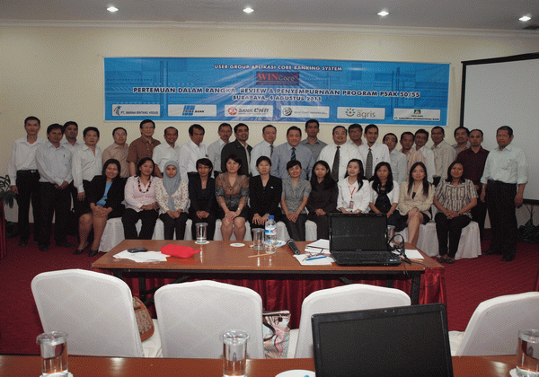
Pada tanggal 04 Agustus 2011, PT. Warna Bintang Kreasi melakukan pertemuan dengan Bank pengguna Aplikasi WINCore (User Group) di Hotel Bisanta Bidakara Surabaya untuk mereview hasil implementasi program PSAK 50/55 dan penyempurnaan yang akan dilakukan.
Pertemuan ini dihadiri oleh perwakilan dari Bank Prima Master, Centratama Nasional Bank, Bank Sinar Harapan Bali dan Anglomas Internasional Bank.
Article about WINCore "BPR Lestari live on Wincore core banking system from WBK" on IBS Journal
(www.ibsintelligence.com)*
BPR Lestari, a savings and lending institution in Bali, Indonesia, has recently gone live with the Wincore core banking solution offered by WBK, a local vendor. BPR Lestarihas around 5000 loans outstanding and about 10,000 deposits, with an asset base of about $85 million according to Alex Chandra, president of the BPR.
BPR Lestari chose Wincore in late 2010, having also considered offerings from another local supplier, Sigma, and from Bank Andara, which has been developing a shared core banking offering based on Temenos' T24. Sigma's product, Chandra believes, is 'too small for us', and best suitedto a bank with just one branch. Bank Andara's offering, on the other hand, is 'not tested yet'.
A large part of the reason for choosing WBK was affordability. WBK arranged for BPR Lestari to receive IBM iSeries hardware along with the core software. Chandra states that WBK also had suitable references. 'So we were quite safe, and didn't expect any trial and error,' he says.
The new core banking offering has automated BPR Lestari's back office processes, which 'has saved us money because it has saved us people and working hours. And it is more accurate than manual processing.'
Having gone live with Wincore, 'we have no complaints', Chandra says. 'We are looking forward to using the system for future growth,' he states, adding that he will consider mobile, internet and phone banking.
WBK is also implementation Wincore at another institution in Central Java but cannot yet provide details, says Peter Han, a spokesman for the vendor. WBK now has a number of customers in Indonesia similar to BPR, all having signed since the vendor launched in 2007.
BPR Lestari Investasi Rp 1.37 Miliar di IT (Dikutip dari Bali Post)
Rabu, 27 April 2011
BPR Lestari, Maret lalu telah berhasil melakukan proses upgrade Core Banking System dengan investasi sebesar Rp 1,37 miliar. Sejak tahun 2007 BPR Lestari telah menggunakan core banking posisi aset sekitar Rp 70 miliar. Hingga kini angka tersebut telah meningkat mencapai Rp 700 miliar.
"Kami investasikan sekitar 1,37 miliar di tahun ini untuk melakukan meningkatkan sistem ini. Sistem yang kami pasang sekarang telah di pakai dengan baik di beberapa bank umum di Indonesia dan salah satu BPR di Indonesia, "kata Direktur Utama BPR Lestari Alex P. Chandra di sela syukuran atas keberhasilan melakukan proses upgrade Core Banking Syatem di Denpasar, Selasa (26/4) kemarin.
Menurutnya, dengan core banking yang baru, diharapkan proses pelayanan yang di berikan BPR Lestari kepada nasabah bisa lebih ditingkatkan. Sebab, sistem baru yang di suplai dari vendor sistem dari Jakarta ini memiliki fitur keamanan yang lebih tinggi. Server system yang baru ini menggunakan server AS/400 iSerries yang jamak di pakai bank umum. Dengan tipe server tersebut maka server yang dipakai menyimpan data akan lebih stabil dan lebih kebal terhadapvirus. "Yang terpenting adalah server ini memiliki skalabilitas yang jauh lebihtinggi dari server kami sebelumnya. Kami juga menyiapkan server cadangan yangberfungsi sebagai DRS (Disaster Recovery System) yang bisa digunakan apabila server utama mengalami crash," terangnya.
Diterangkan, BPR Lestari ke depan memiliki rencana strategis yang cukup besar yang terkait dengan pengembangan bisnis dan pelayanan kepada nasabah.
Direktur Utama PT Warna Bintang Kreasi, Arifin Sunandi, yang merupakan vendor IT BPR Lestari optimis core banking yang baru ini siap untuk supportrencana strategis tersebut. "Kami bangga mendapat kepercayaan dan dapat bekerja sama dengan BPR Lestari,yang termasuk salah satu BPR terbesar di Indonesia," sebutnya.
Arifin Sunandi mengungkapkan, WINCore integrated and online core banking systemyang di implementasikan akan menjadi fondasi IT yang andal dan mampu mendukungrencana bisnis BPR Lestari sekarang dan di masa yang akan datang. "Sistem iniakan memberikan dampak positif terhadap BPR Lestari dengan pertumbuhan yang mengesankan," tambahnya.
USER GROUP APLIKASI CORE BANKING SYSTEM WINCore
13-15 Juli 2010
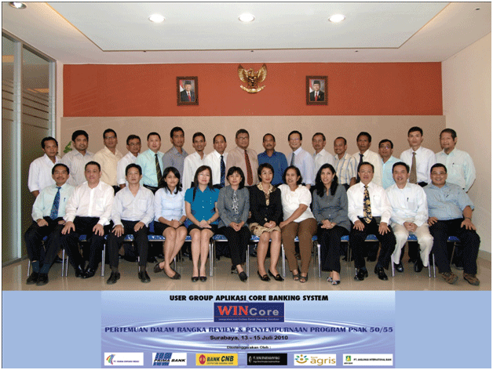
Pada tanggal 13 s/d 15 Juli 2010, PT. Warna Bintang Kreasi melakukan pertemuan dengan Bank pengguna Aplikasi WINCore (User Group) di Surabaya untuk mereview hasil implementasi program PSAK 50/55 dan penyempurnaan yang akan dilakukan.
Pada pertemuan tersebut juga atas prakarsa Bank Prima Master, team Bank Indonesia Surabaya hadir untuk memberikan pengarahan atas penerapan PSAK 50/55. Pertemuan ini dihadiri oleh perwakilan dari Bank Prima Master, Centratama Nasional Bank, Bank Sinar Harapan Bali dan Anglomas Internasional Bank.
Penanda-tanganan Kerjasama ATM Bank CNB - ALTO - PT. Treemas Solusi Utama - PT. Warna Bintang Kreasi
7 Juni 2010
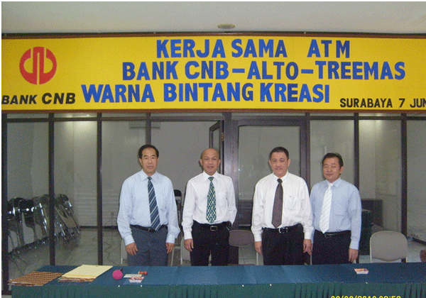
Pada tanggal 7 Juni 2010 bertempat dikantor pusat Bank CNB Surabaya dilakukan penanda-tanganan kerjasama implementasi ATM antara Bank CNB, ALTO, PT Treemas Solusi Utama dan PT Warna Bintang Kreasi.
SURYA YUDHA SABET DUA KATEGORI Best Performance dan Best Information Technology (Dikutip dari Radar Banyumas)
Bank Perkreditan Rakyat (BPR) Bank Surya Yudha berhasil menyabet dua kategori dalam ajang BPR Award 2010 yang digelar bersamaan dengan Asia Pacific Conference and Exhibition (Apconex) di Jakarta Convention Center 28-30 April 2010 kemarin. Selain merebut sebagai Best Performance juga menyabet Best Information Technology.
Agus Budi Santoso, Direktur Utama BPR Bank Surya Yudha mengatakan, penghargaan Best Performance merupakan bukti dari kerja keras dan komitmen Surya Yudha untuk selalu memberikan yang terbaik. "Ucapan terima kasih kami atas kepercayaan yang telah diberikan oleh Bank Indonesia dan Organizing Committee Apconex selaku juri BPR AWARD 2010 ." katanya.
Sementara untuk penghargaan Best Information Technology, Budi Santoso menuturkan, penghargaan tersebut merupakan apresiasi atas telah di implementasikannya sistem Real-Time Online platform IBM AS-400 i series dengansoftware WINCore dari PT. Warna Bintang Kreasi. Tentu saja ini memilikiarti penting bagi BPR Bank Surya Yudha, karena merupakan salah satuparameter untuk menilai tingkat reliability, security dan durability atas kualitas penyimpanan dan pengolahan data nasabah yang ada.
"Kami bahagia dan bangga karena dengan diberikannya kedua penghargaan ini, membuktikan kinerja kami yang baik di mata Bank Indonesia dan industri perbankan Indonesia," katanya.
ARTICLE ABOUT WINCORE "LIVE" IN AMIN BANK - SURABAYA ON IBS JOURNAL
(www.ibsintelligence.com)*
Anglomas Internasional Bank (Amin Bank), based in Surabaya in Indonesia, is live on the Wincore core banking solution of WBK, a relatively young Indonesian vendor.
Amin Bank joins half a dozen or so banks in Indonesia in choosing the system sinceits commercial launch in 2007, according to Peter Han of the vendor. WBK, formerly known as Warna Bintang Kreasi, was founded originally to act as a systems integrator, partnering with both Misys and Temenos. It then developed a central bank reporting system (to interface with core banking systems) before deciding in 2005 to build its own core offering. This was designed to be 'an integrated, real-time online core banking system running on the IBM iSeries platform', Han says.
Wincore was jointly developed with Bank Prima Master, another Surabaya-based operation, 'from scratch', going live in July 2006. Since 2007, Wincore has picked up a couple of customers a year, all so far in Indonesia. These include Centratama Nasional Bank (Bank CNB) in 2007, Bank Sinar Harapan Bali (BSHB, a subsidiary of Bank Mandiri) and Bank Agris in 2008, and BPR Bank Surya Yudha, in two locations, in 2009. 'We are continuously getting more customers through very competitive bidding with other core banking vendors,' says Han, indicating that WBK has competed with both local and overseas suppliers. Amin Bank went live after a four-month project, which Han describes as a typical length for Wincore implementations.
The system is aimed at retail banking institutions. Components include customer and product management, accounts and operations management, a teller and signature verification system, current and savings accounts, lending, deposits,accounting, reporting, GL and clearing.
* IBS Intelligence is the definitive source for independent, in-depth news, research and analysis of the financial technology market.
EXECUTIVE GATHERING dan CUSTOMER TESTIMONY
11 November 2009
Dalam rangka membagi kisah sukses implementasi WINCore di Bank Sinar Harapan Bali pada tanggal 11 Nopember 2009 telah dilakukan Executive Gathering di Hotel Mulia @ Jakarta yang didukung oleh IBM Indonesia. Bapak Alit Asmara Jaya selaku Direktur yang membawahi Divisi IT menceritakanmulai dari proses pemilihan partner solusi Core Banking System, proses implementasi hingga sukses dan memuaskan, digunakan untuk mendukungoperasional Bank Sinar Harapan Bali secara online sejak September 2008 hingga sekarang ini.
USER GROUP APLIKASI CORE BANKING SYSTEM WINCore
27-28 Oktober 2009
Pada tanggal 27 dan 28 Oktober 2009, dilakukan pertemuan dengan beberapa Bank pengguna Aplikasi WINCore di Tabanan @ Bali, guna membahas persiapan implementasi program PSAK 50/55. Pertemuan ini dihadiri oleh perwakilan dariBank Prima Master, Centratama Nasional Bank dan Bank Sinar Harapan Bali.
Sosialisasi Aplikasi WINCore Dalam Mendukung Pelaporan Antasena
17 Oktober 2019
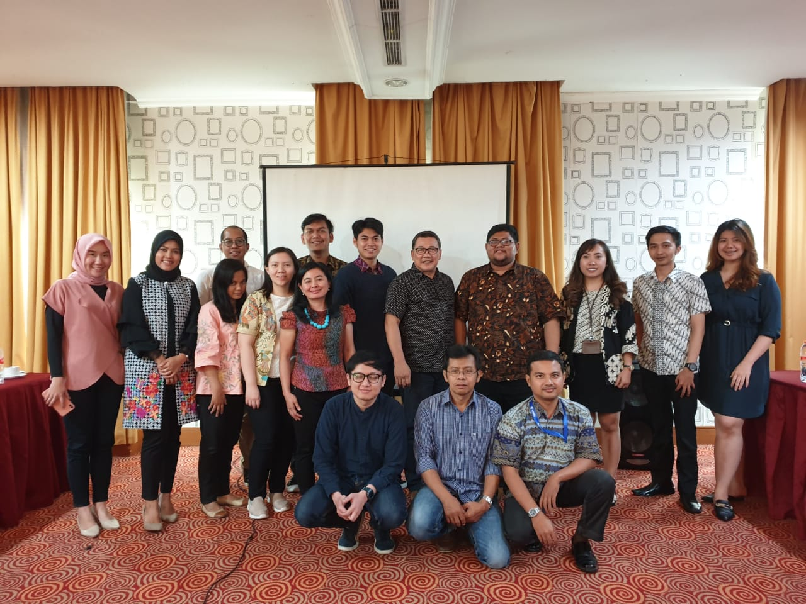
Diskusi & Sharing Penerapan PSAK 71 Di Bank Umum
21 Maret 2018
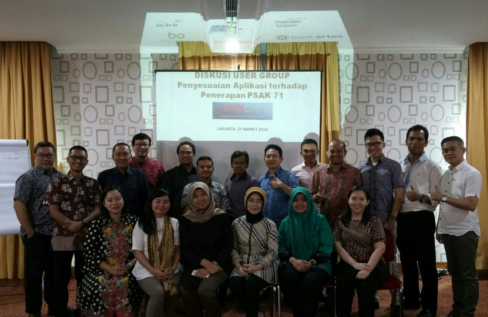
Sosialisasi Aplikasi WINCore untuk Mendukung Implementasi SLIK
18-19 Januari 2017
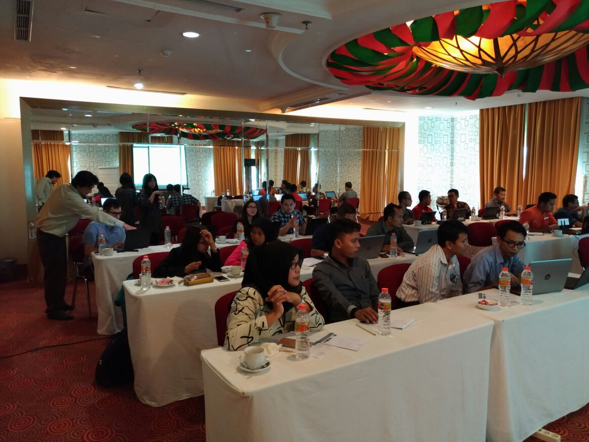
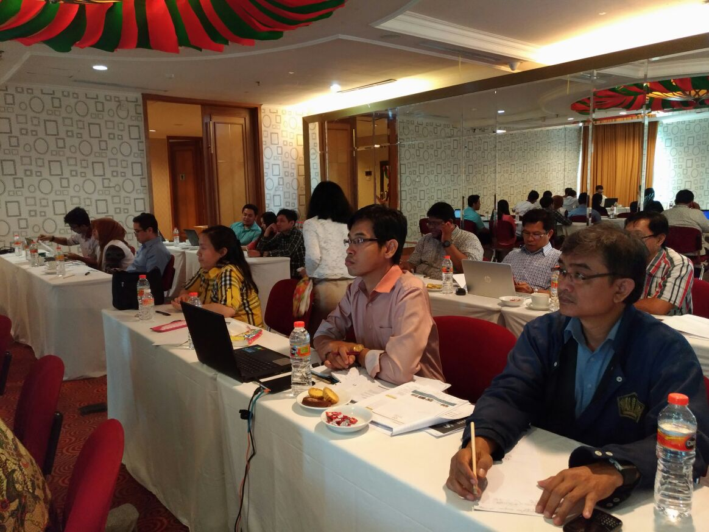
Kopdit CU Lantang Tipo siap Online
(Sumber: Web site Kopdit CU Lantang Tipo)
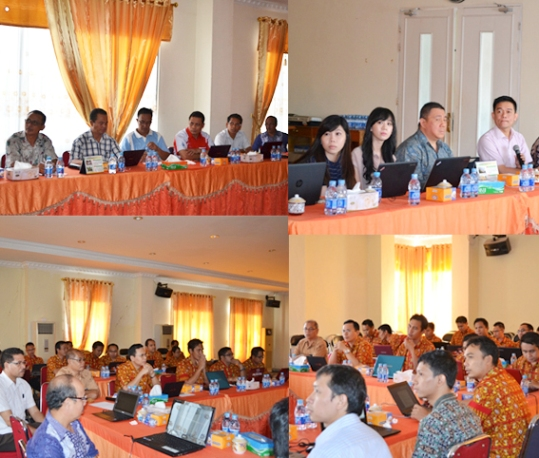
Kopdit CU Lantang Tipo memantapkan langkah untuk online. Hal ini disampaikan saat steering comitte terakhir yang dilakukan antara Pengurus, Pengawas, Pimpinan Eksekutif bersama dengan PT. WBK dan PT. ALTO jumat 5 Juni 2015 lalu. Dalam steering Comitte ini dibahas berkaitan dengan kegiatan yang sudah dilakukan sampai dengan rencana pelaksanaan launching senin 15 Juni 2015 mendatang. Laporan pekerjaan ini disampaikan untuk memastikan launching tersebut sehingga semua sesuai yang direncanakan. Berkaitan dengan launching tersebut dibentuk tim pendamping dan sosialisasi melalui media Televisi lokal PT.Ruai Televisi.
Tahap pertama penggunaan aplikasi Wincore ini digunakan di 7 Kantor Cabang yaitu Cabang Utama, Sanggau, Sekadau, Sintang, Nanga Pinoh, Masdapala Ngabang dan Jeruju Pontianak. Setiap perubahan membutuhkan penyesuaian begitu juga dengan penerapan aplikasi baru ini, tentu diharapkan pengertian dan dukungan darisemua anggota untuk dapat memahami proses tersebut.
Kedepan diharapkan dengan penggunaan aplikasi online inidapat semakin meningkatkan layanan kepada anggota sehingga pekerjaan administratif tidak lagi dikerjakan secara manual tetapi dikerjakan oleh sistem. Sehingga eksekutif dapat memiliki lebih banyak waktuuntuk lebih melayani anggota. (Dt)
USER GROUP APLIKASI CORE BANKING SYSTEM WINCore
21-22 August 2014
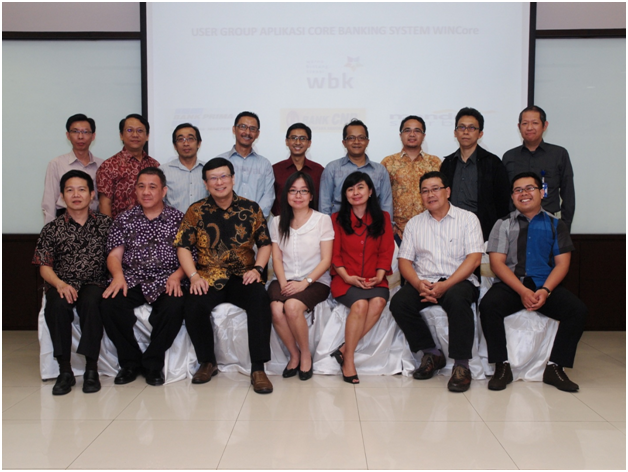
Pada tanggal 21 s/d 22 Agustus 2014, PT.Warna Bintang Kreasi melakukan pertemuan dengan Bank Umum pengguna Aplikasi WINCore (User Group) di Surabaya. Pada pertemuan tersebut, WBK mempresentasikan fitur-fitur baruhasil pengembangan WBK atas aplikasi WINCore serta mendengar dan menerima masukan dari peserta user group. Pertemuan ini dihadiri oleh perwakilan dari Bank Prima Master, Centrama Nasional Bank, Bank Sinar Harapan Bali, Anglomas Internasional Bank dan Bank Dinar Indonesia.
Acara 10 tahun WBK sekaligus peresmian kantor & logo baru WBK
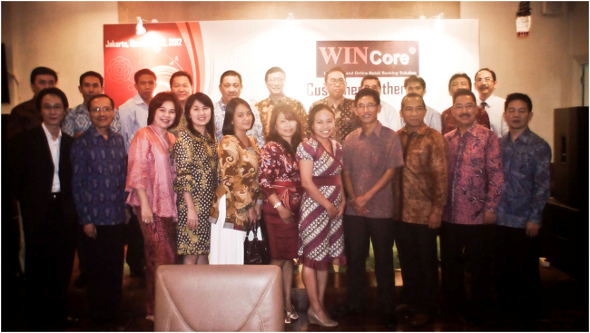
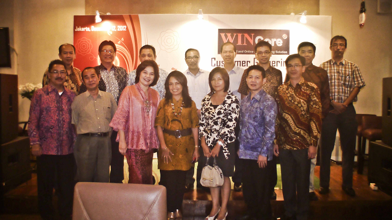
Pada tanggal 12 Desember 2012 WBK mengadakan acara 10 tahun WBK sekaligus peresmian kantor baru WBK di Belleza Office Tower Lt 10 dan peresmian logo baru WBK. Pada acara tersebut hadir bank-bank pengguna WINCore beserta business partner WBK.
BPR BKK LASEM TERAPKAN TEKNOLOGI MUTAKHIR
Sumber: Hari Suara Merdeka - 20 Desember 2011
Sebuah terobosan baru PD. BPR BKK Lasem, Rembang untuk mengatasi hambatan dalam memberi pelayanan kepada nasabahnya diluncurkan. Mereka memanfaatkan teknologi mutakhir guna menjamin pelayanan professional serta jaringan terpadu. Kerja keras dan kerja sama tim dari PD. BPR BKK Lasem dengan PT. Warna Bintang Kreasi (WBK) selama lebih kurang lima bulan, sukses membuat implementasi aplikasi Core Banking System (WINCore). Kesuksesan menggunakan aplikasi WINCore ini ditandai dengan pemotongan tumpeng di kantor pusat PD. BPR BKK Lasem, lantai III kemarin. Hadir dalam acara itu Direktur Utama H. Sutarjo SE, MM dan seluruh jajaran direksi serta Direktur Utama PT. WBK Arifin Sunandi beserta timnya. Hal yang telah dicapai ketika menggunakan aplikasi WINCore, menurut Sutarjo, mengembangkan sertamemodernisasi layanan melalui pemanfaatan teknologi dengan memberi fasilitas transaksi secara real time online disemua kantor cabang yang tersebar di Rembang dan sekitarnya. Selain itu, penggunaan aplikasi WINCore mampu meningkatkan efisien oprasional perbankan, meningkatkan system pemantauan dan control, serta memenuhi asas kepatuhan terhadap Bank Indonesia. Disamping hal-hal tersebut di atas, penggunaan aplikasi WINCore ini mampu memberi kemudahan kepada PD. BPR BKK Lasem untuk mengembangkan produk-produknya, baik dari sisi tabungan dan deposito maupun kredit pinjaman termasuk layanan-layanan elektronik, seperti ATM, EDC, dan Mobile Banking.
Satu-satunya
Khusus untuk aplikasi WINCore, awalnya implementasi di Bank Prima Master Surabaya pada 2006. kemudian penggunaan aplikasi ini diikuti Bank CNB, Bank Sinar Harapan Bali, dan Bank AGRIS. Sekarang, PD. BPR BKK Lasem ikut menggunakan aplikasi WINcore dan menjadi satu-satunya BPR BKK di Jateng yang menerapkan layanan perbankan real time online.
USER GROUP APLIKASI CORE BANKING SYSTEM WINCore
04 Agustus 2011
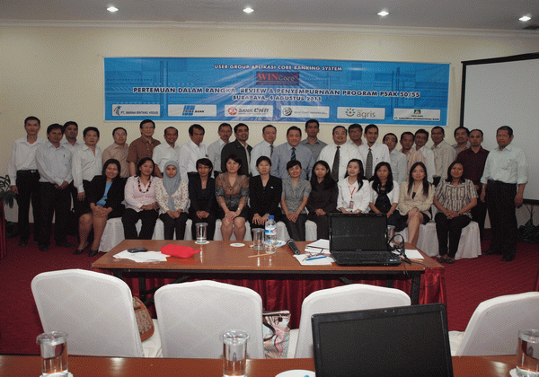
Pada tanggal 04 Agustus 2011, PT. Warna Bintang Kreasi melakukan pertemuan dengan Bank pengguna Aplikasi WINCore (User Group) di Hotel Bisanta Bidakara Surabaya untuk mereview hasil implementasi program PSAK 50/55 dan penyempurnaan yang akan dilakukan.
Pertemuan ini dihadiri oleh perwakilan dari Bank Prima Master, Centratama Nasional Bank, Bank Sinar Harapan Bali dan Anglomas Internasional Bank.
Article about WINCore "BPR Lestari live on Wincore core banking system from WBK" on IBS Journal
(www.ibsintelligence.com)*
BPR Lestari, a savings and lending institution in Bali, Indonesia, has recently gone live with the Wincore core banking solution offered by WBK, a local vendor. BPR Lestarihas around 5000 loans outstanding and about 10,000 deposits, with an asset base of about $85 million according to Alex Chandra, president of the BPR.
BPR Lestari chose Wincore in late 2010, having also considered offerings from another local supplier, Sigma, and from Bank Andara, which has been developing a shared core banking offering based on Temenos' T24. Sigma's product, Chandra believes, is 'too small for us', and best suitedto a bank with just one branch. Bank Andara's offering, on the other hand, is 'not tested yet'.
A large part of the reason for choosing WBK was affordability. WBK arranged for BPR Lestari to receive IBM iSeries hardware along with the core software. Chandra states that WBK also had suitable references. 'So we were quite safe, and didn't expect any trial and error,' he says.
The new core banking offering has automated BPR Lestari's back office processes, which 'has saved us money because it has saved us people and working hours. And it is more accurate than manual processing.'
Having gone live with Wincore, 'we have no complaints', Chandra says. 'We are looking forward to using the system for future growth,' he states, adding that he will consider mobile, internet and phone banking.
WBK is also implementation Wincore at another institution in Central Java but cannot yet provide details, says Peter Han, a spokesman for the vendor. WBK now has a number of customers in Indonesia similar to BPR, all having signed since the vendor launched in 2007.
BPR Lestari Investasi Rp 1.37 Miliar di IT (Dikutip dari Bali Post)
Rabu, 27 April 2011
BPR Lestari, Maret lalu telah berhasil melakukan proses upgrade Core Banking System dengan investasi sebesar Rp 1,37 miliar. Sejak tahun 2007 BPR Lestari telah menggunakan core banking posisi aset sekitar Rp 70 miliar. Hingga kini angka tersebut telah meningkat mencapai Rp 700 miliar.
"Kami investasikan sekitar 1,37 miliar di tahun ini untuk melakukan meningkatkan sistem ini. Sistem yang kami pasang sekarang telah di pakai dengan baik di beberapa bank umum di Indonesia dan salah satu BPR di Indonesia, "kata Direktur Utama BPR Lestari Alex P. Chandra di sela syukuran atas keberhasilan melakukan proses upgrade Core Banking Syatem di Denpasar, Selasa (26/4) kemarin.
Menurutnya, dengan core banking yang baru, diharapkan proses pelayanan yang di berikan BPR Lestari kepada nasabah bisa lebih ditingkatkan. Sebab, sistem baru yang di suplai dari vendor sistem dari Jakarta ini memiliki fitur keamanan yang lebih tinggi. Server system yang baru ini menggunakan server AS/400 iSerries yang jamak di pakai bank umum. Dengan tipe server tersebut maka server yang dipakai menyimpan data akan lebih stabil dan lebih kebal terhadapvirus. "Yang terpenting adalah server ini memiliki skalabilitas yang jauh lebihtinggi dari server kami sebelumnya. Kami juga menyiapkan server cadangan yangberfungsi sebagai DRS (Disaster Recovery System) yang bisa digunakan apabila server utama mengalami crash," terangnya.
Diterangkan, BPR Lestari ke depan memiliki rencana strategis yang cukup besar yang terkait dengan pengembangan bisnis dan pelayanan kepada nasabah.
Direktur Utama PT Warna Bintang Kreasi, Arifin Sunandi, yang merupakan vendor IT BPR Lestari optimis core banking yang baru ini siap untuk supportrencana strategis tersebut. "Kami bangga mendapat kepercayaan dan dapat bekerja sama dengan BPR Lestari,yang termasuk salah satu BPR terbesar di Indonesia," sebutnya.
Arifin Sunandi mengungkapkan, WINCore integrated and online core banking systemyang di implementasikan akan menjadi fondasi IT yang andal dan mampu mendukungrencana bisnis BPR Lestari sekarang dan di masa yang akan datang. "Sistem iniakan memberikan dampak positif terhadap BPR Lestari dengan pertumbuhan yang mengesankan," tambahnya.
USER GROUP APLIKASI CORE BANKING SYSTEM WINCore
13-15 Juli 2010
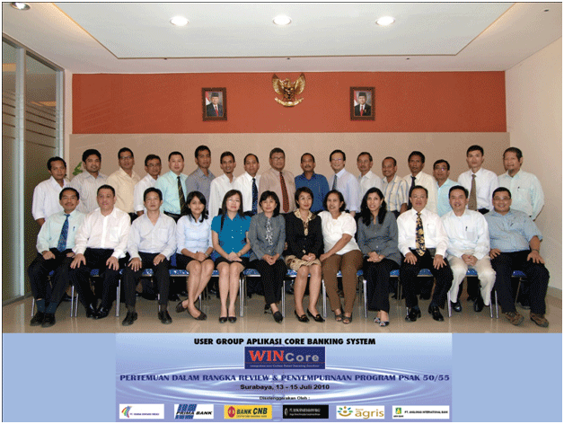
Pada tanggal 13 s/d 15 Juli 2010, PT. Warna Bintang Kreasi melakukan pertemuan dengan Bank pengguna Aplikasi WINCore (User Group) di Surabaya untuk mereview hasil implementasi program PSAK 50/55 dan penyempurnaan yang akan dilakukan.
Pada pertemuan tersebut juga atas prakarsa Bank Prima Master, team Bank Indonesia Surabaya hadir untuk memberikan pengarahan atas penerapan PSAK 50/55. Pertemuan ini dihadiri oleh perwakilan dari Bank Prima Master, Centratama Nasional Bank, Bank Sinar Harapan Bali dan Anglomas Internasional Bank.
Penanda-tanganan Kerjasama ATM Bank CNB - ALTO - PT. Treemas Solusi Utama - PT. Warna Bintang Kreasi
7 Juni 2010
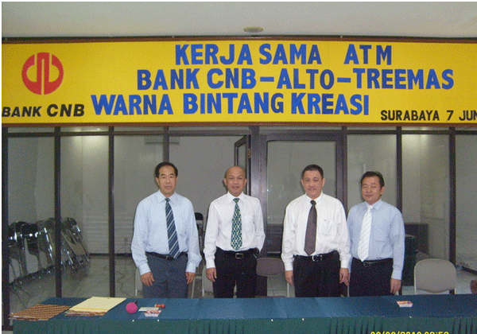
Pada tanggal 7 Juni 2010 bertempat dikantor pusat Bank CNB Surabaya dilakukan penanda-tanganan kerjasama implementasi ATM antara Bank CNB, ALTO, PT Treemas Solusi Utama dan PT Warna Bintang Kreasi.
SURYA YUDHA SABET DUA KATEGORI Best Performance dan Best Information Technology (Dikutip dari Radar Banyumas)
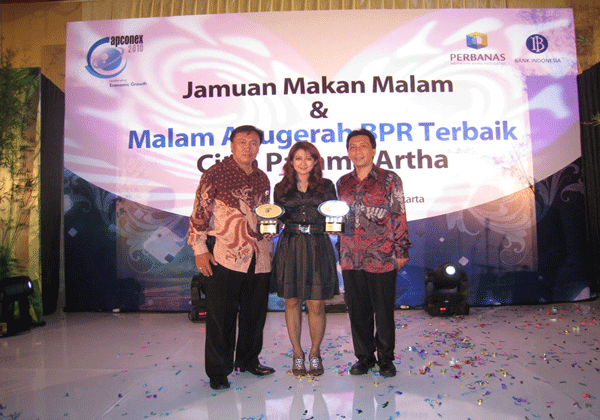
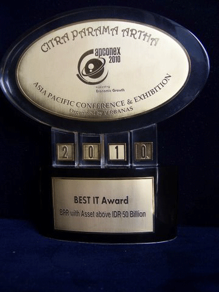
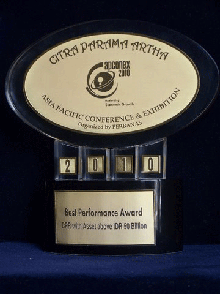
Bank Perkreditan Rakyat (BPR) Bank Surya Yudha berhasil menyabet dua kategori dalam ajang BPR Award 2010 yang digelar bersamaan dengan Asia Pacific Conference and Exhibition (Apconex) di Jakarta Convention Center 28-30 April 2010 kemarin. Selain merebut sebagai Best Performance juga menyabet Best Information Technology.
Agus Budi Santoso, Direktur Utama BPR Bank Surya Yudha mengatakan, penghargaan Best Performance merupakan bukti dari kerja keras dan komitmen Surya Yudha untuk selalu memberikan yang terbaik. "Ucapan terima kasih kami atas kepercayaan yang telah diberikan oleh Bank Indonesia dan Organizing Committee Apconex selaku juri BPR AWARD 2010 ." katanya.
Sementara untuk penghargaan Best Information Technology, Budi Santoso menuturkan, penghargaan tersebut merupakan apresiasi atas telah di implementasikannya sistem Real-Time Online platform IBM AS-400 i series dengansoftware WINCore dari PT. Warna Bintang Kreasi. Tentu saja ini memilikiarti penting bagi BPR Bank Surya Yudha, karena merupakan salah satuparameter untuk menilai tingkat reliability, security dan durability atas kualitas penyimpanan dan pengolahan data nasabah yang ada.
"Kami bahagia dan bangga karena dengan diberikannya kedua penghargaan ini, membuktikan kinerja kami yang baik di mata Bank Indonesia dan industri perbankan Indonesia," katanya.
ARTICLE ABOUT WINCORE "LIVE" IN AMIN BANK - SURABAYA ON IBS JOURNAL
(www.ibsintelligence.com)*
Anglomas Internasional Bank (Amin Bank), based in Surabaya in Indonesia, is live on the Wincore core banking solution of WBK, a relatively young Indonesian vendor.
Amin Bank joins half a dozen or so banks in Indonesia in choosing the system sinceits commercial launch in 2007, according to Peter Han of the vendor. WBK, formerly known as Warna Bintang Kreasi, was founded originally to act as a systems integrator, partnering with both Misys and Temenos. It then developed a central bank reporting system (to interface with core banking systems) before deciding in 2005 to build its own core offering. This was designed to be 'an integrated, real-time online core banking system running on the IBM iSeries platform', Han says.
Wincore was jointly developed with Bank Prima Master, another Surabaya-based operation, 'from scratch', going live in July 2006. Since 2007, Wincore has picked up a couple of customers a year, all so far in Indonesia. These include Centratama Nasional Bank (Bank CNB) in 2007, Bank Sinar Harapan Bali (BSHB, a subsidiary of Bank Mandiri) and Bank Agris in 2008, and BPR Bank Surya Yudha, in two locations, in 2009. 'We are continuously getting more customers through very competitive bidding with other core banking vendors,' says Han, indicating that WBK has competed with both local and overseas suppliers. Amin Bank went live after a four-month project, which Han describes as a typical length for Wincore implementations.
The system is aimed at retail banking institutions. Components include customer and product management, accounts and operations management, a teller and signature verification system, current and savings accounts, lending, deposits,accounting, reporting, GL and clearing.
* IBS Intelligence is the definitive source for independent, in-depth news, research and analysis of the financial technology market.
EXECUTIVE GATHERING dan CUSTOMER TESTIMONY
11 November 2009
Dalam rangka membagi kisah sukses implementasi WINCore di Bank Sinar Harapan Bali pada tanggal 11 Nopember 2009 telah dilakukan Executive Gathering di Hotel Mulia @ Jakarta yang didukung oleh IBM Indonesia. Bapak Alit Asmara Jaya selaku Direktur yang membawahi Divisi IT menceritakanmulai dari proses pemilihan partner solusi Core Banking System, proses implementasi hingga sukses dan memuaskan, digunakan untuk mendukungoperasional Bank Sinar Harapan Bali secara online sejak September 2008 hingga sekarang ini.
USER GROUP APLIKASI CORE BANKING SYSTEM WINCore
27-28 Oktober 2009
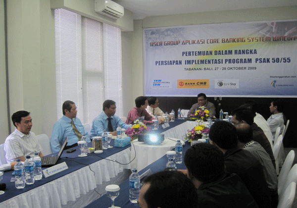
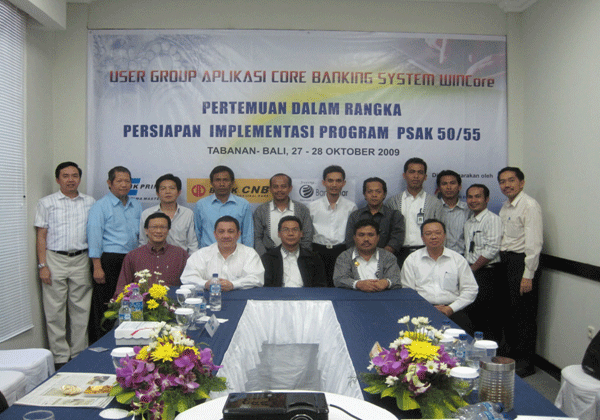
Pada tanggal 27 dan 28 Oktober 2009, dilakukan pertemuan dengan beberapa Bank pengguna Aplikasi WINCore di Tabanan @ Bali, guna membahas persiapan implementasi program PSAK 50/55. Pertemuan ini dihadiri oleh perwakilan dariBank Prima Master, Centratama Nasional Bank dan Bank Sinar Harapan Bali.
Project Implementasi WINCore
2020
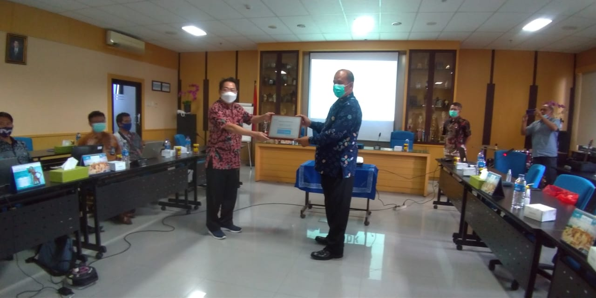
BPR Bank Sleman
2018
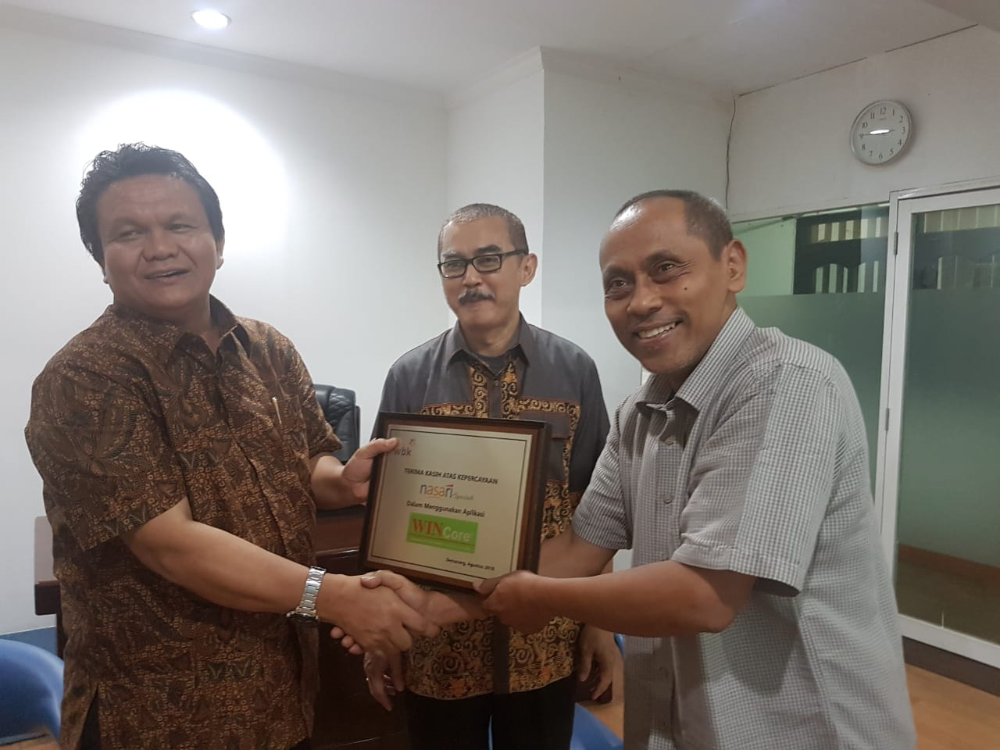
KSP Nasari Mandiri Syariah
2016
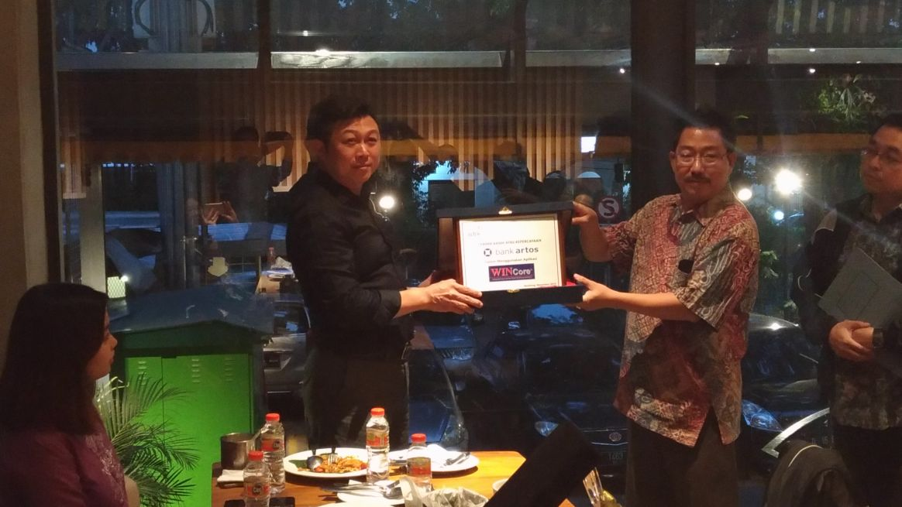
Bank Artos Indonesia
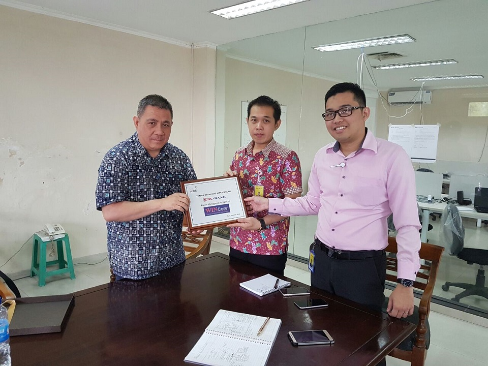
BPR Central Indonesia
2015
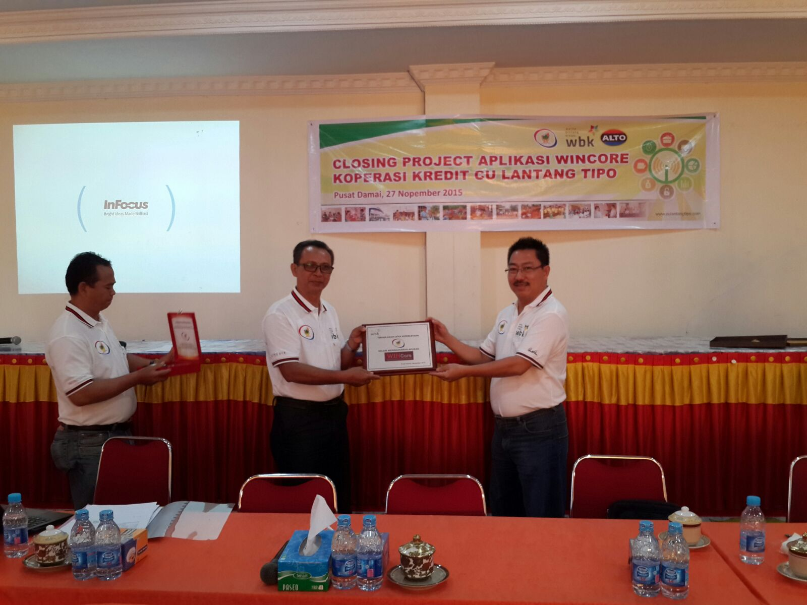
Koperasi Kredit Cu Lantang
2014
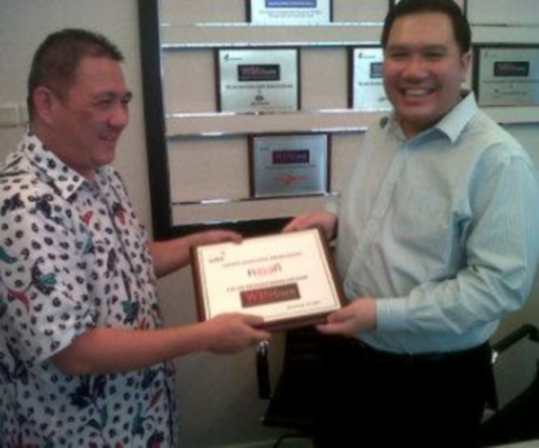
KSP Nasari
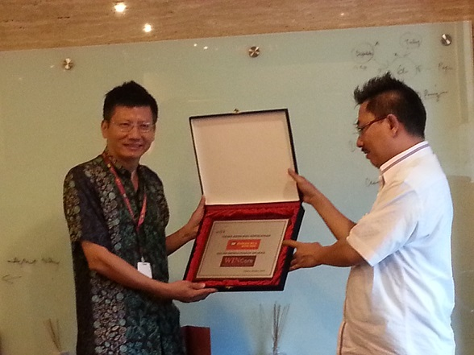
KSP Indosurya
2013
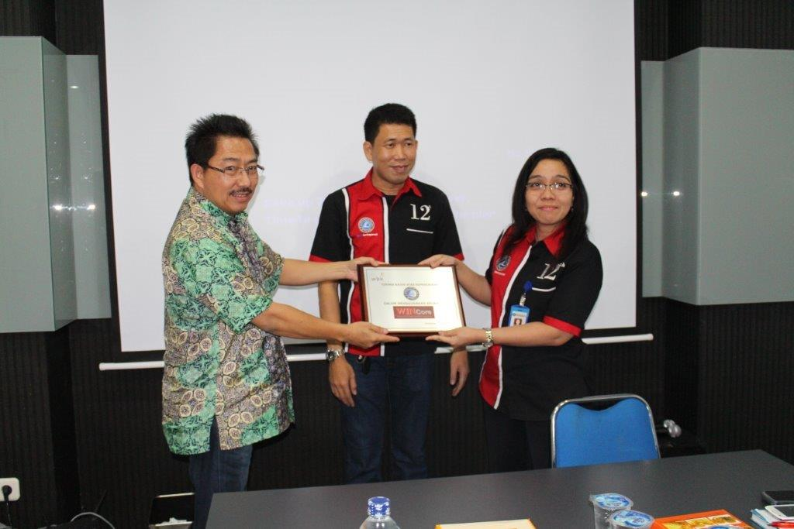
KSP Intidana
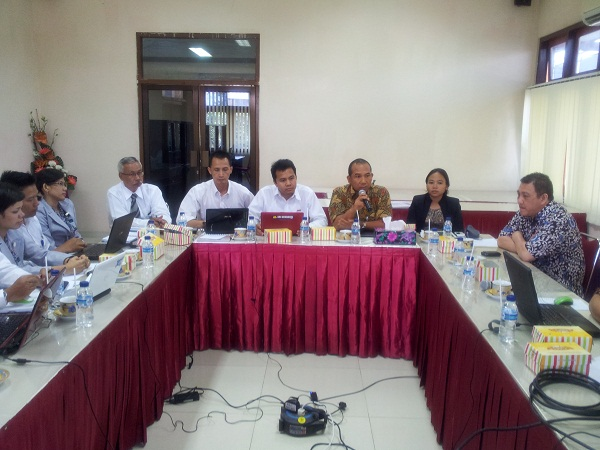
BPR Bank Jogya
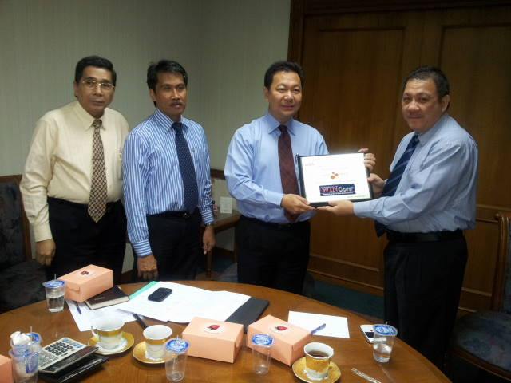
Bank Dinar Indonesia
2011
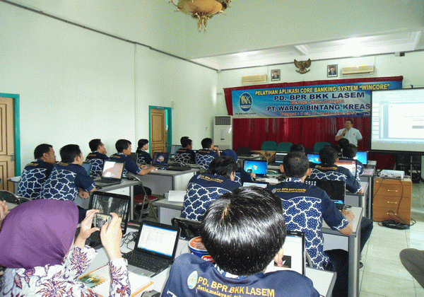
BPR BKK Lasem
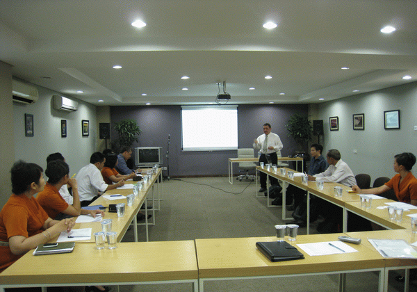
BPR Lestari
2010
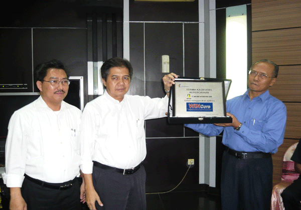
Anglomas International Bank (AMIN Bank)
2009
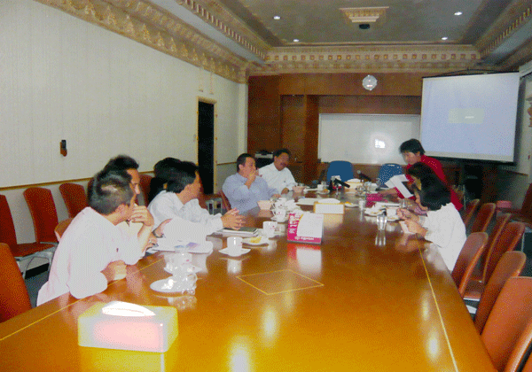
BPR Bank Surya Yudha
2008
Bank Agris
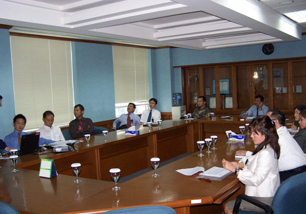
Bank Sinar Harapan Bali
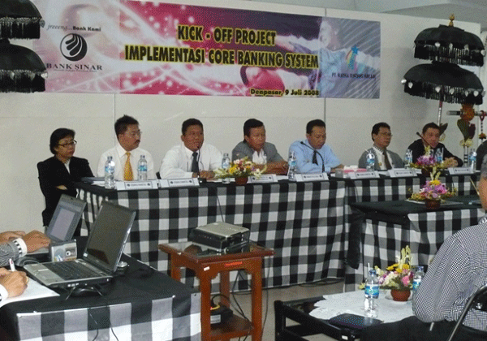
2007
Centratama Nasional Bank
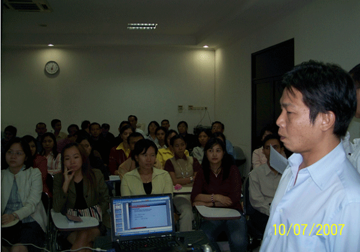
2006
Bank Prima Master
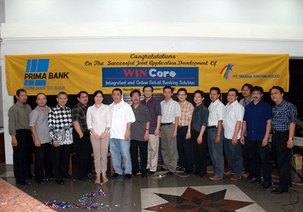
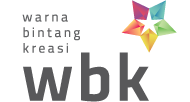